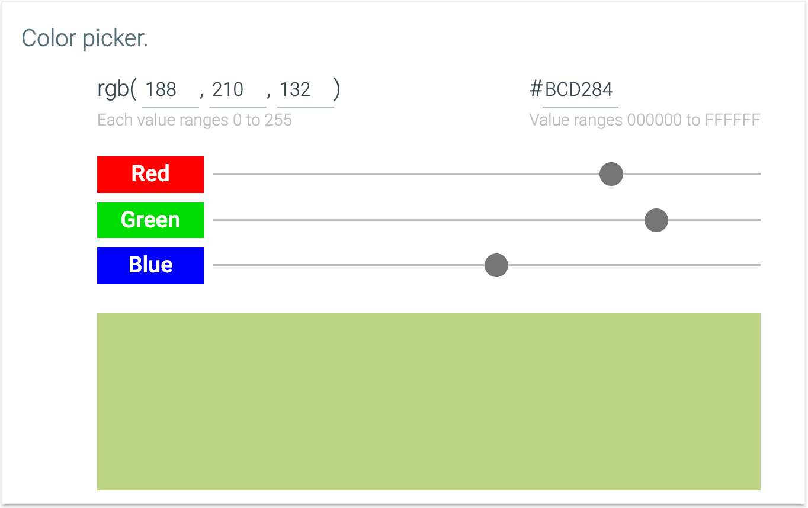
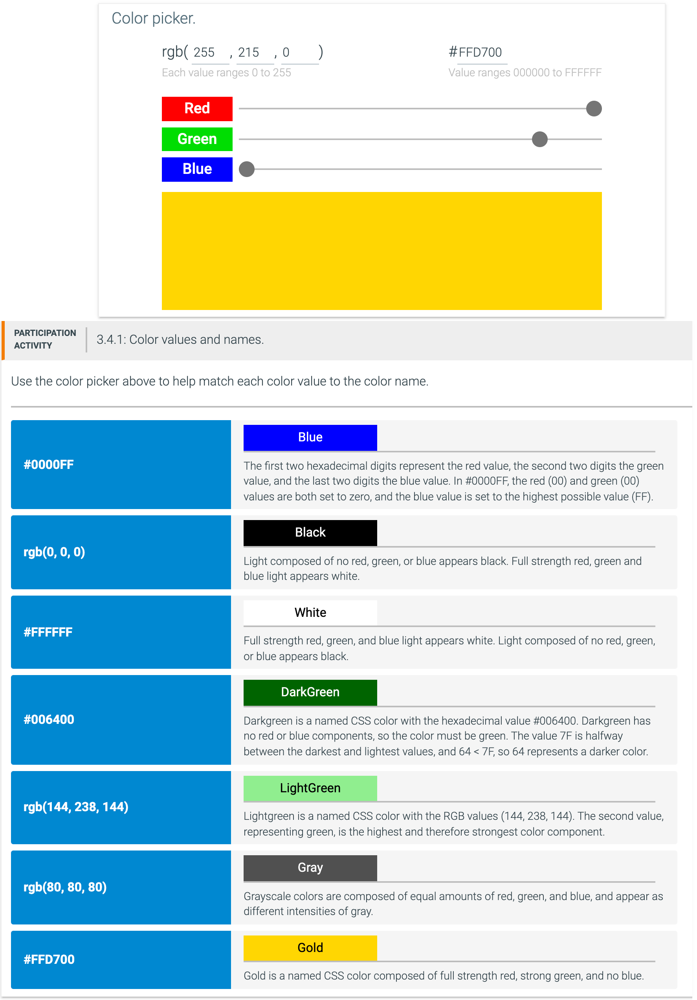
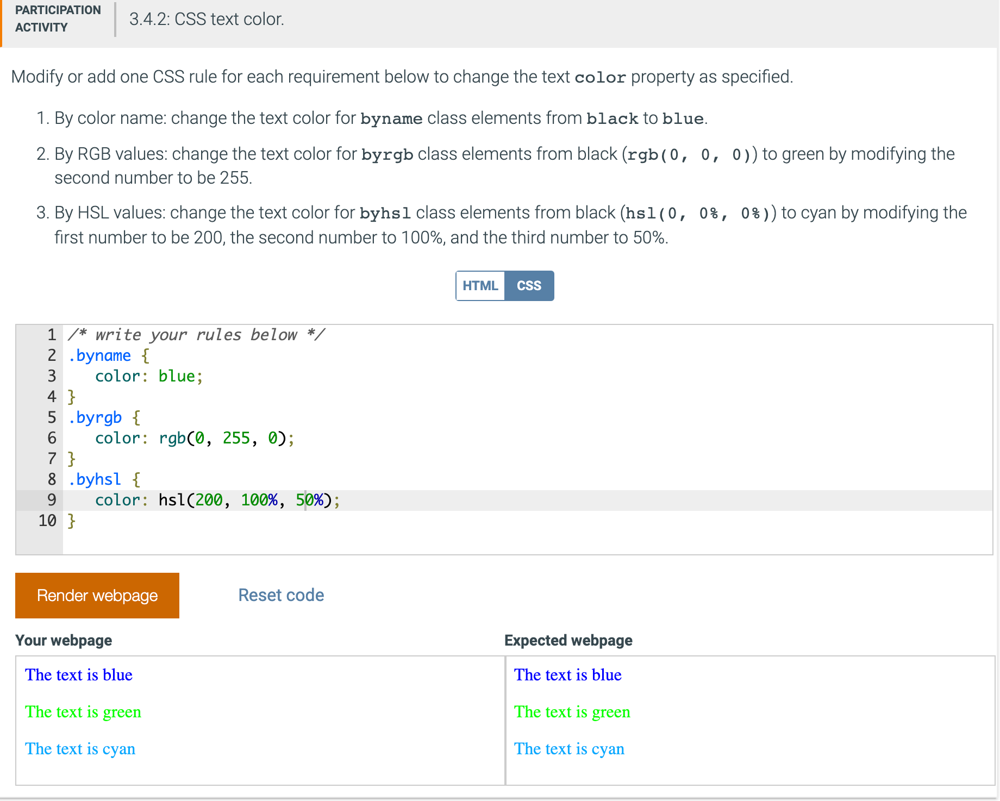

3.4 Common Properties
Color property
The color CSS property changes the text color to a specified color value. A color value can be specified in several ways:
- CSS defines 140 color names. Ex: white, blue, black, gray, forestgreen, magenta.
-
An RGB color value specifies a color using the rgb(red, green, blue) function by indicating the red, green, and
blue intensities. Each intensity for red, green, and blue is between 0 and 255, where 0 is the lowest intensity and 255 is the highest.
Ex: rgb(0, 0, 0) is black, rgb(0, 0, 255) is blue, rgb(255, 255, 0) is yellow, and rgb(255, 255, 255) is white. -
A hexadecimal color specifies a color using the #RRGGBB format by indicating the red, green, and blue intensities. Each intensity
for red, green, and blue is between 00 and FF hexadecimal numbers, where 00 is the lowest intensity and FF is the highest.
Ex: #000000 is black, #0000FF is blue, #FFFF00 is yellow, and #FFFFFF is white. -
An HSL color value specifies a color using the hsl(hue, saturation, lightness) function by indicating the hue,
saturation, and lightness values. The hue value ranges between 0 and 360, and the saturation and lightness values range between 0% and 100%.
Ex: hsl(0, 0%, 0%) is black, hsl(120, 100%, 50%) is green, and hsl(0, 100%, 25%) is dark red.
The HSL color specification method is harder to understand and is not used as frequently as the RGB and hexadecimal color specification methods.
- The RGB and HSL color values can add an alpha value to allow for transparency. The RGBA color value specifies a color using the rgba(red, green, blue, alpha) function by indicating the red, green, blue, and alpha intensities. The HSLA color value specifies a color using the hsla(hue, saturation, lightness, alpha) function by indicating the hue, saturation, lightness, and alpha intensities. The intensities have the same ranges as for RGB or HSL color values, but the alpha intensity is between 0 and 1. An alpha of 0 means fully transparent, 1 means fully opaque, and 0.5 means half transparent.



Background properties
Every element in a web page has a set of background properties. The web browser first draws the element's background and then draws the element's content. If the element's background is not fully opaque, the element's parent is visible under the element's content. Common background properties include:
- The background-color property specifies the background color.
- The background-image property specifies a background image.
- The background property is shorthand for setting several of the element's background properties at the same time.